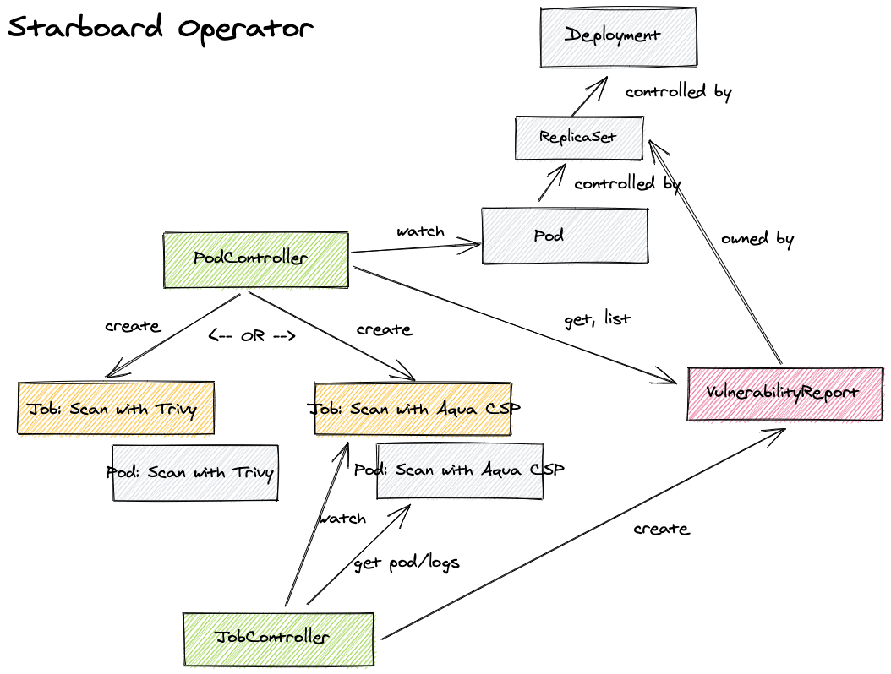

Starboard Operator
Overview
This operator automatically updates security report resources in response to workload and other changes on a Kubernetes cluster - for example, initiating a vulnerability scan when a new pod is started. In other words, the desired state for this operator is that for each workload there are security reports stored in the cluster as custom resources.
Currently, the operator only supports vulnerabilityreports security resources as depicted below. However, we plan to support all custom security resources.

Installation
With Static YAML Manifests
You can install the operator with provided static YAML manifests with fixed values. However, this approach has its shortcomings. For example, if you want to change the container image or modify default configuration parameters, you have to create new manifests or edit existing ones.
To deploy the operator in the starboard-operator namespace and configure it to
watch the default namespace:
-
Send the definition of the
vulnerabilityreportscustom resource to the Kubernetes API:kubectl apply -f https://raw.githubusercontent.com/aquasecurity/starboard/v0.7.1/deploy/crd/vulnerabilityreports.crd.yaml -
Send the following Kubernetes objects definitions to the Kubernetes API:
kubectl apply -f https://raw.githubusercontent.com/aquasecurity/starboard/v0.7.1/deploy/static/01-starboard-operator.ns.yaml \ -f https://raw.githubusercontent.com/aquasecurity/starboard/v0.7.1/deploy/static/02-starboard-operator.sa.yaml \ -f https://raw.githubusercontent.com/aquasecurity/starboard/v0.7.1/deploy/static/03-starboard-operator.clusterrole.yaml \ -f https://raw.githubusercontent.com/aquasecurity/starboard/v0.7.1/deploy/static/04-starboard-operator.clusterrolebinding.yaml -
(Optional) Configure the operator by creating the
starboardConfigMap in thestarboard-operatornamespace. If you skip this step, the operator will ensure the ConfigMap on startup with the default configuration values.kubectl apply -f https://raw.githubusercontent.com/aquasecurity/starboard/v0.7.1/deploy/static/05-starboard-operator.cm.yamlReview the default values and makes sure the operator is configured properly:
kubectl describe cm starboard -n starboard-operator -
Finally, create the
starboard-operatorDeployment in thestarboard-operatornamespace to start the operator's pod:kubectl apply -f https://raw.githubusercontent.com/aquasecurity/starboard/v0.7.1/deploy/static/06-starboard-operator.deployment.yaml
Configuration
Configuration of the operator is done via environment variables at startup.
| NAME | DEFAULT | DESCRIPTION |
|---|---|---|
OPERATOR_NAMESPACE |
N/A | See Install modes |
OPERATOR_TARGET_NAMESPACES |
N/A | See Install modes |
OPERATOR_SCANNER_TRIVY_ENABLED |
true |
The flag to enable Trivy vulnerability scanner |
OPERATOR_SCANNER_AQUA_CSP_ENABLED |
false |
The flag to enable Aqua vulnerability scanner |
OPERATOR_SCANNER_AQUA_CSP_IMAGE |
aquasec/scanner:5.0 |
The Docker image of Aqua scanner to be used |
OPERATOR_LOG_DEV_MODE |
false |
The flag to use (or not use) development mode (more human-readable output, extra stack traces and logging information, etc). |
OPERATOR_SCAN_JOB_TIMEOUT |
5m |
The length of time to wait before giving up on a scan job |
OPERATOR_METRICS_BIND_ADDRESS |
:8080 |
The TCP address to bind to for serving [Prometheus][prometheus] metrics. It can be set to 0 to disable the metrics serving. |
OPERATOR_HEALTH_PROBE_BIND_ADDRESS |
:9090 |
The TCP address to bind to for serving health probes, i.e. /healthz/ and /readyz/ endpoints. |
Install Modes
The values of the OPERATOR_NAMESPACE and OPERATOR_TARGET_NAMESPACES determine
the install mode, which in turn determines the multitenancy support of the operator.
| MODE | OPERATOR_NAMESPACE | OPERATOR_TARGET_NAMESPACES | DESCRIPTION |
|---|---|---|---|
| OwnNamespace | operators |
operators |
The operator can be configured to watch events in the namespace it is deployed in. |
| SingleNamespace | operators |
foo |
The operator can be configured to watch for events in a single namespace that the operator is not deployed in. |
| MultiNamespace | operators |
foo,bar,baz |
The operator can be configured to watch for events in more than one namespace. |
| AllNamespaces | operators |
The operator can be configured to watch for events in all namespaces. |